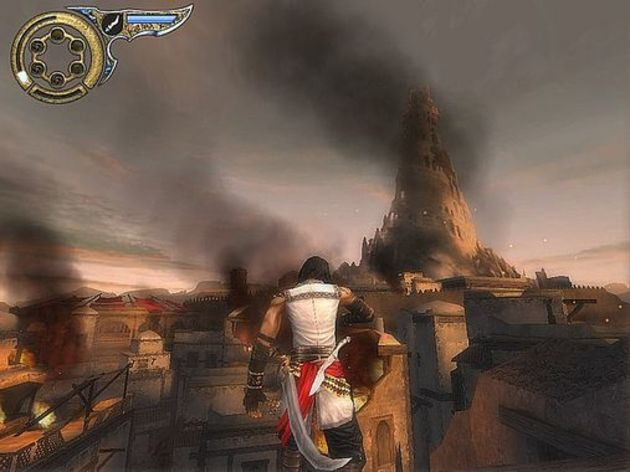
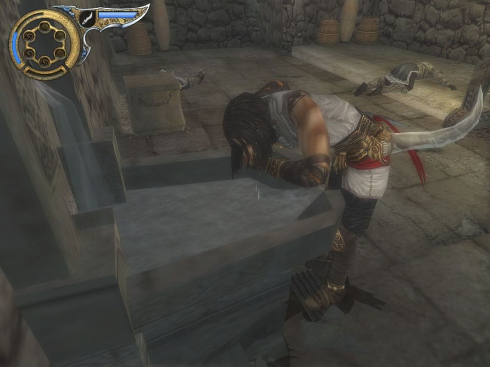
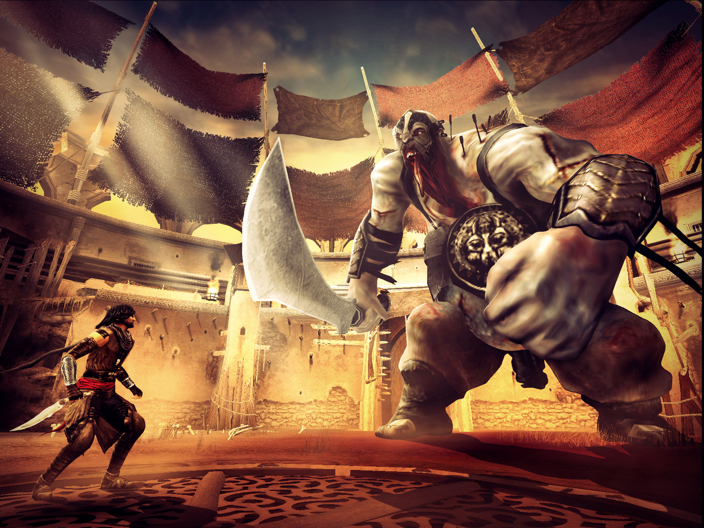
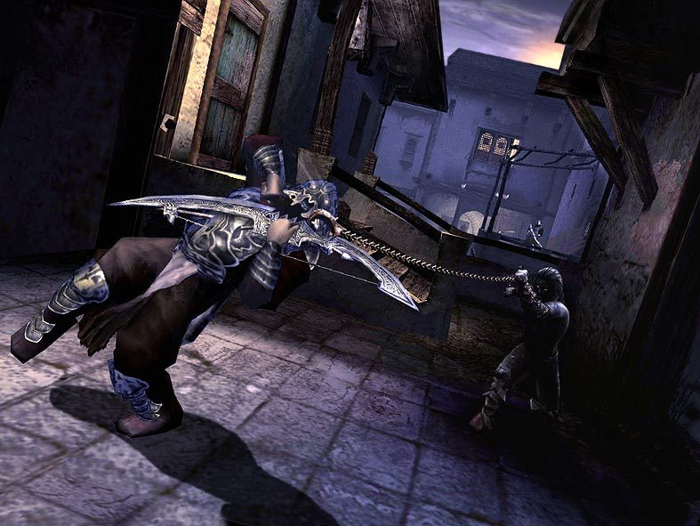
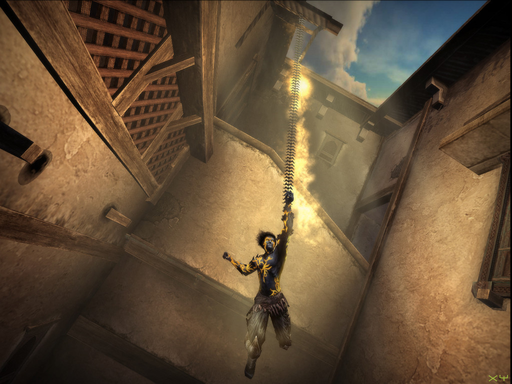

Prince of Persia: The Two Thrones Free
Game Description
Prince of Persia: The Two Thrones is an action-adventure game developed and published by Ubisoft Montreal, hitting the market in December 2005 across various platforms including Xbox, Microsoft Windows, PlayStation 2, and Nintendo GameCube. Later adaptations were made for PlayStation Portable and Wii, titled Prince of Persia: Rival Swords, where the Wii version incorporated motion-sensing capabilities while the PSP version introduced exclusive content. A remastered version in high-definition was released on the PlayStation Network for PlayStation 3 on December 21, 2010.
Synopsis
Prince of Persia: The Two Thrones picks up the story after the events of Prince of Persia: Warrior Within, wherein the Prince defeats the Dahaka, rescues Kaileena, and prevents the creation of the Sands of Time. Despite altering the timeline, the Prince retains his memories from the previous games. The story diverges from the original timeline where the Vizier and Maharajah find an hourglass filled with Sands of Time. Instead, they discover it empty and return to Babylon. As a result, the Vizier remains alive, and Farah, who aided the Prince before, has never encountered him.
Plot
The game opens with the Prince discarding his medallion into the sea near Babylon's shores. Upon returning to the city with Kaileena, they find it besieged by war. Their ship is attacked, and after a fierce struggle, Kaileena is captured by enemy guards. The Prince pursues them and confronts the Vizier, who kills Kaileena with the Dagger of Time, unleashing the Sands once again. The Vizier impales himself with the dagger, rendering himself immortal, while the Prince, infected by the Sands, gains a weapon known as the Dagger tail. However, during the confusion, the Prince manages to steal the dagger and escape before succumbing entirely to the infection.
Washed into the city's sewers, the Prince embarks on a journey to confront the Vizier, realizing that his actions have altered the timeline, preventing his previous encounter with the Vizier. The Sands' infection begins to affect his mind, splitting him into two personalities: his original self and the Dark Prince, characterized by cruelty and arrogance. As the Dark Prince exerts control over him, the Prince transforms into a sand-infused hybrid, granting him new abilities to overcome obstacles.
Screenshot






System Requirements
- CPU: Intel Pentium 3 or AMD Athlon
- CPU Speed: 1 GHz
- RAM: 256 MB
- Operating System: Windows 2000/XP (only)
- Video Card: 32 MB Direct X 9.0C compliant video card (NVIDIA GeForce3+ / ATI Radon 7500+)
- DirectX: Version 9.0c (included on disk)
- Sound Card: Yes
- Free Disk Space: 1.5 GB at least
- CD-ROM: 16x /faster / 4x DVD-ROM
- Recommended CPU: Pentium 4 / AMD AthlonXP
- Recommended CPU Speed: 1.5 GHz at least
- Recommended RAM: 512 MB
- Recommended Video Card: 128 MB Direct X 9.0c compliant video card (NVIDIA GeForce3+ or ATI Radon 7500+)
Installation Instructions
- Download the archive from download link given below.
- Right click on the downloaded file and click on "Extract here".
- You need Winrar installed to do it.
- Now right click on the extracted iso and click on "Extract here" again.
- OR You can also open iso with software called "UltraISO". Click on the "Mount to virtual drive" icon on the 3rd bar on top of UltraISO to mount it. Then go to the virtual drive and open it. This is usually just after My Computer.
- Once mounted or extracted, Right click on the file named "Setup.exe" and click on "Run As Administrator" to start the game installation.
- Once the installation is complete, open the folder named "Crack" and copy all the files from there and paste into the directory where you have installed the game. For example if you have installed game in "My Computer > Local Disk C > Program files > "Prince Of Persia The Two Thrones" then paste those files in this directory.
- Click on replace if it asks for it.
- Right click on the file named "prince of persia.exe" and then click on "Run as Administrator" to start the game.
- Enjoy.
Total File Size : 4.15 GB
Download Now